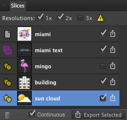

С помощью панели «Фрагменты» можно экспортировать определенные области вашего проекта в растровые изображения общепризнанных форматов.
О панели «Фрагменты»
После определения области экспорта можно ее экспортировать с помощью панели «Фрагменты», выбрав разные размеры и форматы.
На панели можно разместить один или несколько фрагментов. Для каждого фрагмента устанавливается одна настройка экспорта, в пределах которой можно сохранить несколько форматов экспорта (с детальной информацией о формате файла и параметрах масштабирования). В свою очередь, в каждом формате экспорта может быть несколько размеров экспортируемых элементов. Благодаря этому из каждого фрагмента можно одновременно экспортировать элементы с разными графическими форматами и размерами.

Панель «Фрагменты» с отображаемыми областями экспорта в документе.
Параметры
На панели доступны приведенные далее параметры.
Построитель пакета: используется для создания пакетов Xcode JSON из нескольких фрагментов универсальных значков Apple или значков приложений. Предназначено только для разработки пользовательских интерфейсов Xcode.
Предустановка экспорта: используется для вывода предустановок фрагмента со стандартными графическими форматами и параметрами, предназначенными для проектирования значков приложений Apple.
Копирование настройки экспорта в буфер обмена: используется для копирования выделенной настройки экспорта фрагмента (включая несколько форматов экспорта) в буфер обмена. Если выбрать в настройке формат экспорта, характерный для определенного графического элемента, можно воспользоваться кнопкой для копирования этого формата в другую настройку экспорта фрагмента.
Замена настройки экспорта данными из буфера обмена: используется для вставки скопированной настройки экспорта фрагмента из буфера обмена в другой выделенный целевой фрагмент. Можно также вставить скопированный формат экспорта.
Добавить формат экспорта из буфера обмена: используется для вставки скопированного формата экспорта, выбранного в настройке экспорта фрагмента, в другую настройку экспорта фрагмента.
Удалить: используется для удаления элемента панели и соответствующей области экспорта со страницы. Элемент панели «Страница» удалить невозможно.
Непрерывно: если этот параметр выбран, при изменении содержимого фрагментов осуществляется их автоматический повторный экспорт. Этот параметр становится доступным при нажатии Экспортировать фрагменты (n) и выборе папки экспорта.
Экспортировать фрагменты (n): используется для экспорта всех отмеченных элементов панели.
Параметры настройки экспорта
В настройке экспорта для каждой записи фрагмента доступны приведенные далее параметры.
Страница: указывает на то, что областью экспорта является вся страница или все монтажные области.
Фрагмент: указывает на область экспорта, нарисованную с помощью инструмента «Фрагмент».
Фрагмент (из элемента): указывает на область экспорта, созданную из монтажной области, слоя, группы или объекта.
Пиктограмма: используется для визуального обозначения подлежащей экспорту области.
Имя файла: используется для отображения имени области экспорта. Чтобы задать собственное имя файла, введите его непосредственно в текстовое поле. Если имя не задано, на выбор предлагаются уникальные имена.
Активный / неактивный: если флажок установлен, область экспортируется при нажатии Экспортировать фрагменты (n) в нижней части панели.
Экспортировать: используется для экспорта области, представленной в виде элемента панели.
Путь: используется для определения имени папки, в которую будет записываться набор изображений JSON. Предназначено только для разработки пользовательских интерфейсов Xcode.
Построитель: используется для создания дополнительных файлов Xcode JSON вместе с экспортированными фрагментами для значков Apple. Предназначено только для разработки пользовательских интерфейсов Xcode.
Параметры формата экспорта
В каждой настройке экспорта фрагмента можно сохранить несколько форматов. Для каждого формата доступны приведенные далее параметры.
Формат файла: используется для выбора формата экспортируемого файла во всплывающем меню.
Масштабирование размера: используется для выбора параметров масштабирования (например, однократный, двукратный и т. д.), которые устанавливаются для формата экспорта.
Дополнительные свойства: используется для выбора пользовательского разрешения, пути и имени файла, состоящих из определенных лексем или пользовательских переменных.
Экспортировать: используется для экспорта фрагмента с применением указанного формата экспорта.
 Копирование настройки экспорта в буфер обмена: используется для копирования выделенной настройки экспорта фрагмента (включая несколько форматов экспорта) в буфер обмена. Если выбрать в настройке формат экспорта, характерный для определенного графического элемента, можно воспользоваться кнопкой для копирования этого формата в другую настройку экспорта фрагмента.
Копирование настройки экспорта в буфер обмена: используется для копирования выделенной настройки экспорта фрагмента (включая несколько форматов экспорта) в буфер обмена. Если выбрать в настройке формат экспорта, характерный для определенного графического элемента, можно воспользоваться кнопкой для копирования этого формата в другую настройку экспорта фрагмента. Замена настройки экспорта данными из буфера обмена: используется для вставки скопированной настройки экспорта фрагмента из буфера обмена в другой выделенный целевой фрагмент. Можно также вставить скопированный формат экспорта.
Замена настройки экспорта данными из буфера обмена: используется для вставки скопированной настройки экспорта фрагмента из буфера обмена в другой выделенный целевой фрагмент. Можно также вставить скопированный формат экспорта. Добавить формат экспорта из буфера обмена: используется для вставки скопированного формата экспорта, выбранного в настройке экспорта фрагмента, в другую настройку экспорта фрагмента.
Добавить формат экспорта из буфера обмена: используется для вставки скопированного формата экспорта, выбранного в настройке экспорта фрагмента, в другую настройку экспорта фрагмента. Удалить: используется для удаления элемента панели и соответствующей области экспорта со страницы. Элемент панели «Страница» удалить невозможно.
Удалить: используется для удаления элемента панели и соответствующей области экспорта со страницы. Элемент панели «Страница» удалить невозможно. Экспортировать фрагменты (n): используется для экспорта всех отмеченных элементов панели.
Экспортировать фрагменты (n): используется для экспорта всех отмеченных элементов панели.